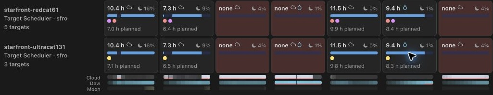
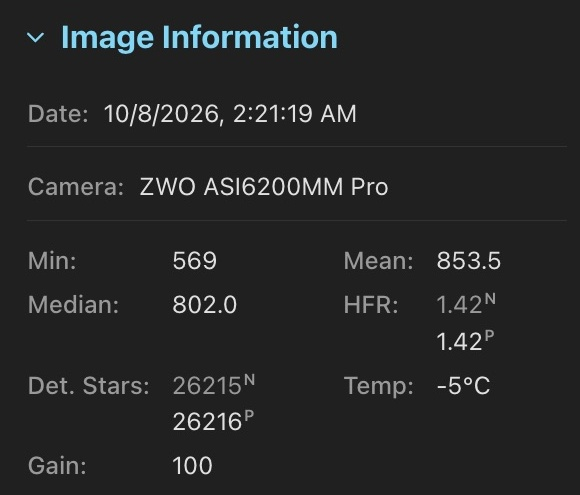
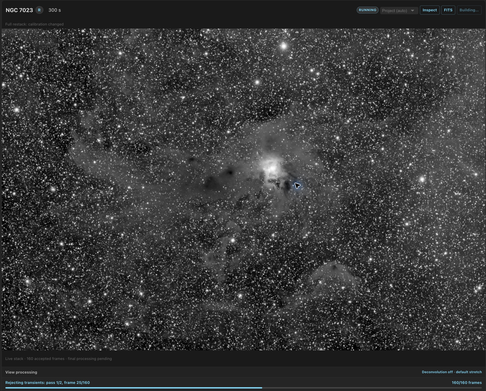
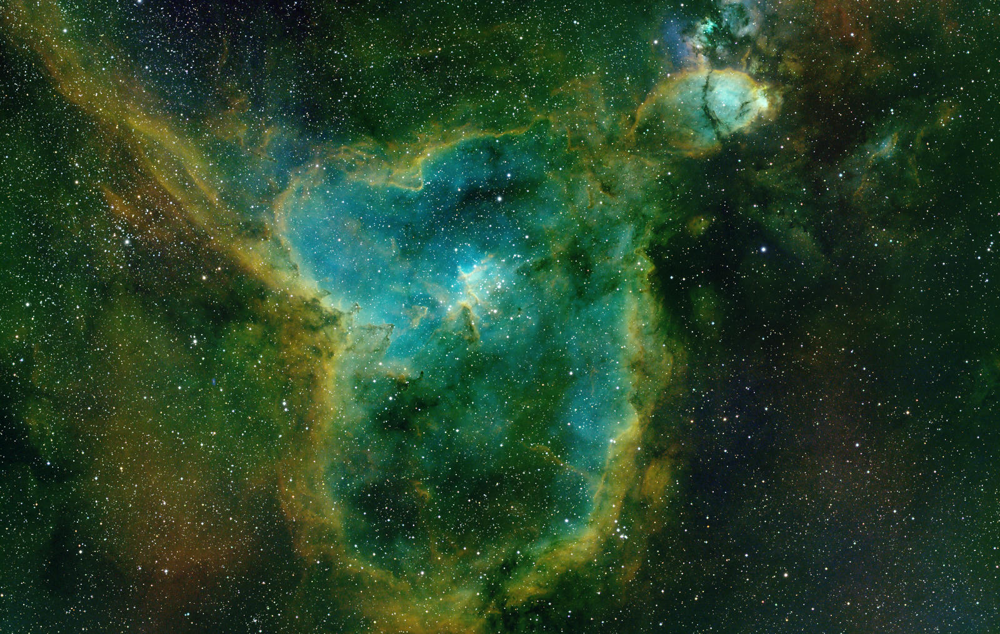
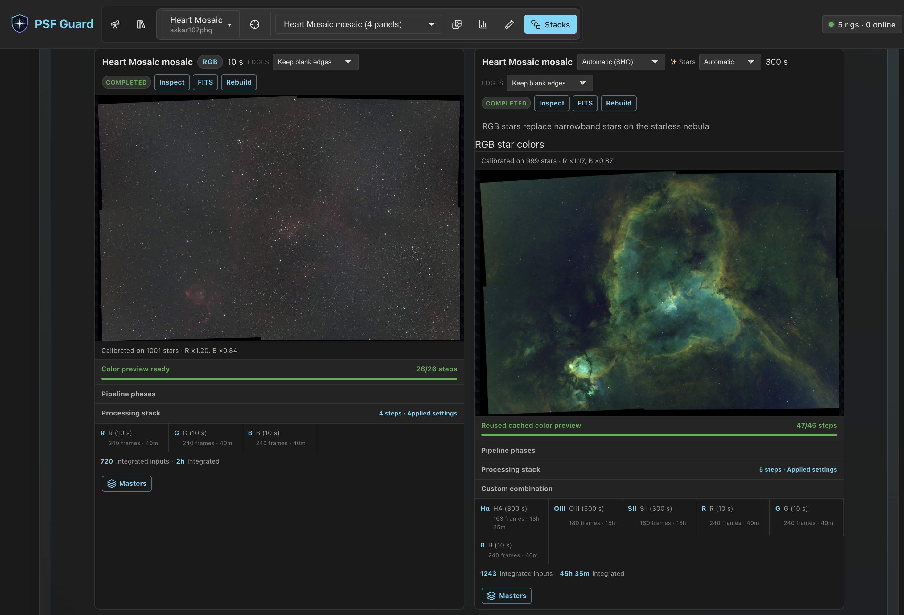
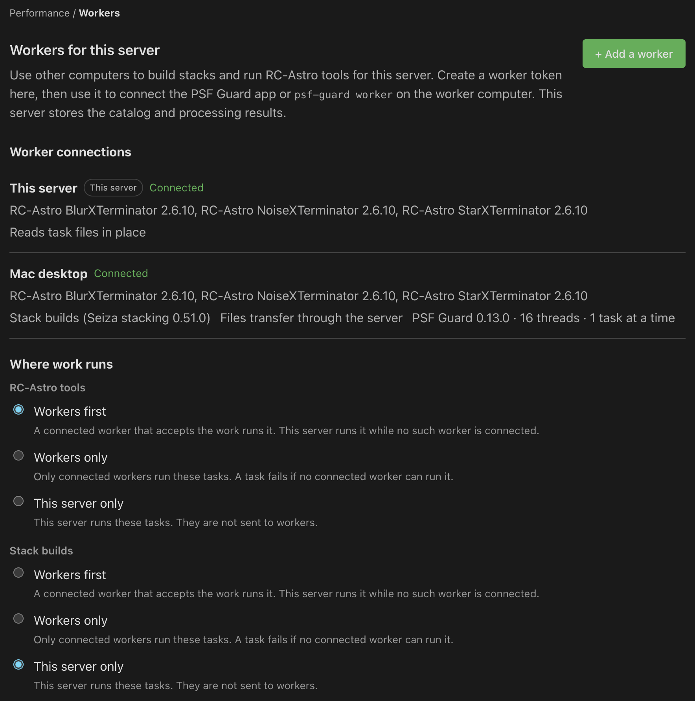
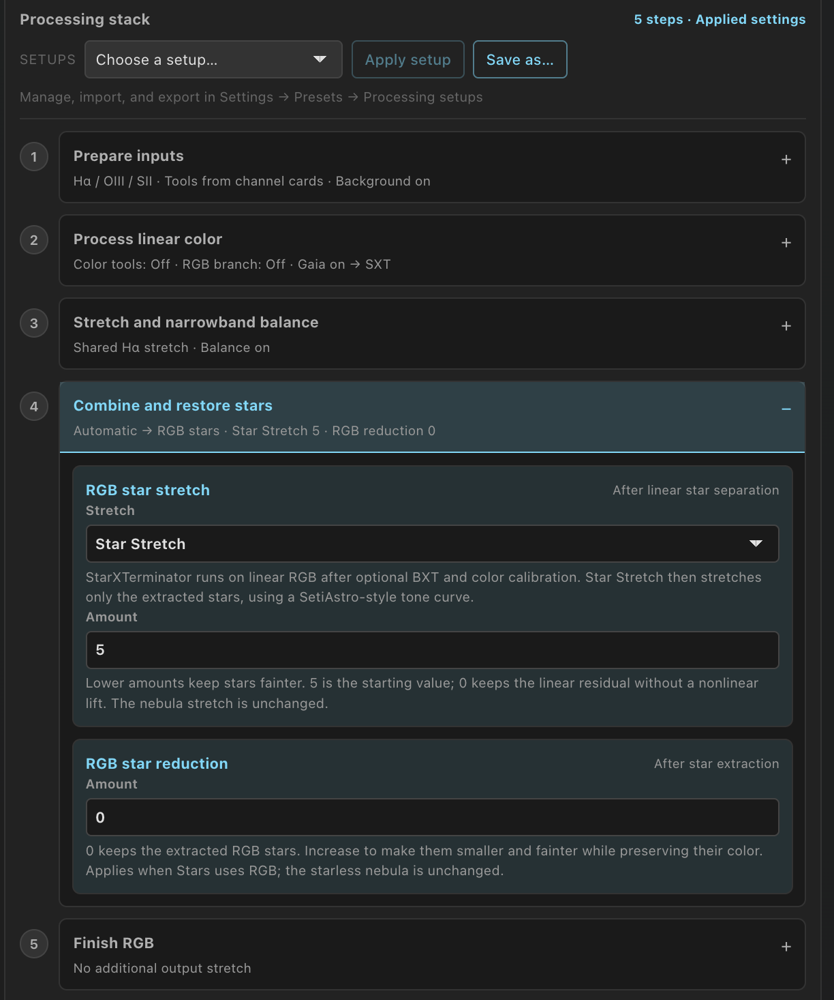
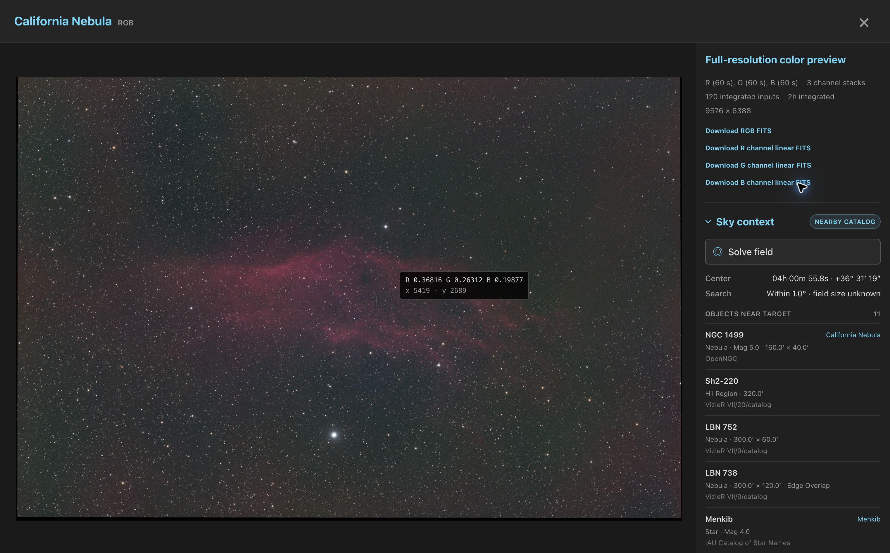
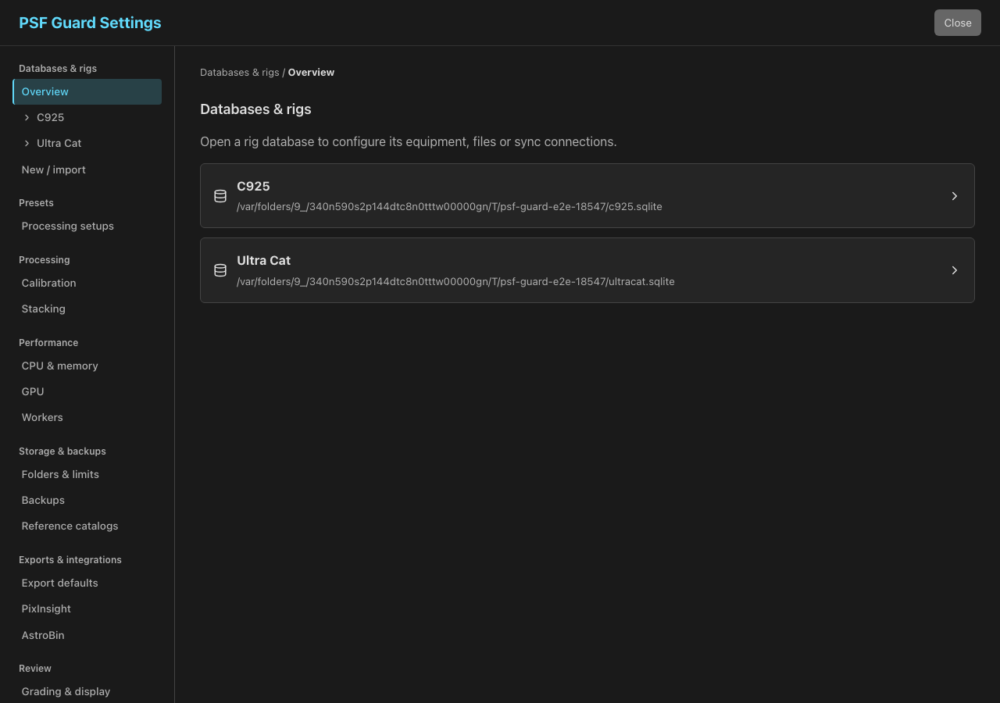

New in 0.13
Plan each rig’s nights, match star measurements to N.I.N.A., build integrated mosaics and send processing to another computer. New color controls and image-inspection tools help you review the result.
Read before upgrading · All changes in 0.13 · New in 0.12
Plan the work each rig can finish
Open Rigs › Nights for predicted Target Scheduler and Director schedules. Compare clear dark hours, mark unavailable nights and use cloud forecasts and an optional dew limit. Nearby sites share Cloud, Dew and Moon bars, and each scheduled filter run shows the minimum separation between the Moon and its target. For activated plans, Visibility estimates completion alongside the rig's other work.
Review Director overrides for one night or Target Scheduler priorities that persist until changed. Night planning is in early beta. Availability marks change estimates only. Forecasts also change estimates by default; optional Director weather holds need a separate opt-in and a later plugin update.
Plan a night · Estimate completion

0.13 adds a rig's Weather tab and separate N.I.N.A. and forecast summaries in Rigs › Live. Weather reporting and holds need a later Director plugin update; the published 0.1.0.3 Beta 1 does not include them. See weather setup and limits.
Choose the star measurements used for grading
Match detection to each rig or import its N.I.N.A. profile. Image Information shows both capture and scan measurements, marked N and P. Choose Stars and HFR in Scoring to select the source for limits and comparisons. PSF Guard remains the default.
Choose a measurement source · Import detection settings

Build faster and watch the stack form
Supported GPUs accelerate debayering, star detection, resampling, live stacking and the final pass. A channel's Live stack image updates about every five seconds while frames are integrated. Computers without a supported GPU keep using the CPU.

Choose GPU passes · Follow a live stack
Integrate mosaic panels into one image
Build one FITS mosaic per channel, preserving each frame's calibration. Compose RGB, LRGB or narrowband color from the integrated channels. Local background normalization matches panel backgrounds; color calibration solves the integrated canvas itself.


Use another computer's GPU or RC-Astro tools
Workers can build stacks, including mosaics, and run BlurXTerminator, NoiseXTerminator and StarXTerminator. Choose where stack builds and RC-Astro run separately. Desktop workers continue in the menu bar or tray after you close the window; Windows and Linux services can run before login.
Stack builds stay on the server until you choose otherwise. Install the same PSF Guard release on the server and workers. WBPP stays on the server.

Control the nebula and stars separately
Color processing follows numbered, expandable steps. Inspect the color and RGB-star branches separately, fit and subtract continuum for emission combinations, and adjust RGB-star sharpening, stretching and reduction. Automatic SHO/HOO recipes can restore RGB stars when the sources and StarXTerminator are available, with an explained fallback.
Existing previews keep their processing choices. New previews start from the default Color setup under Settings → Presets → Processing setups.

Inspect the stack's pixels and sky position
The stack inspector uses the image viewer's full-window layout and a narrower details sidebar. Stacks offer Sky context, HFR star labels and a PSF view. Turn on Value or RA/Dec, or press M or R, for a readout beside the pointer.

Calibration coverage now uses the flat master a stack will use, so a matching same-night master keeps its lights eligible even when raw flats are older. The report also explains why nearer raw flats were not used.
Find a setting by task or database
Settings groups processing, performance, storage, exports and review in a sidebar or a compact phone selector. Open a database by name for Rig setup, Database & files, Import and Sync. New databases inherit shared quality-analysis and calibrated-copy defaults; existing databases keep their choices as explicit overrides.
